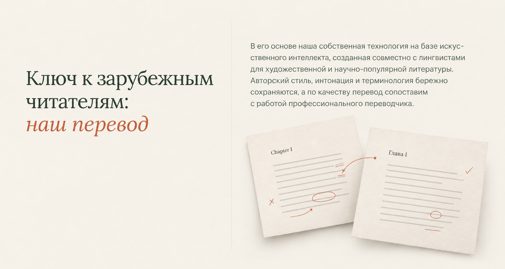
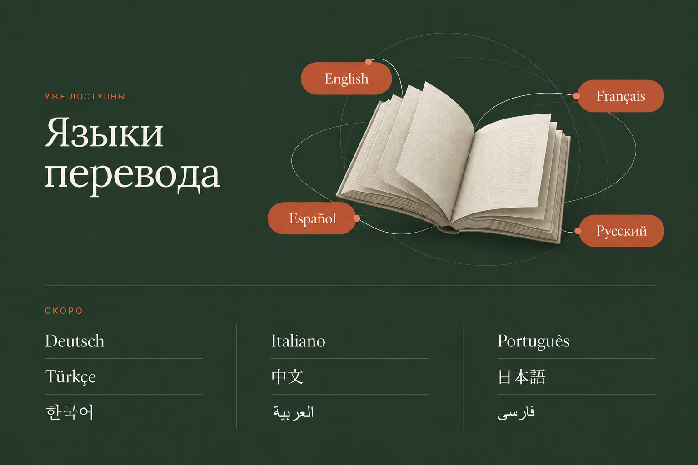
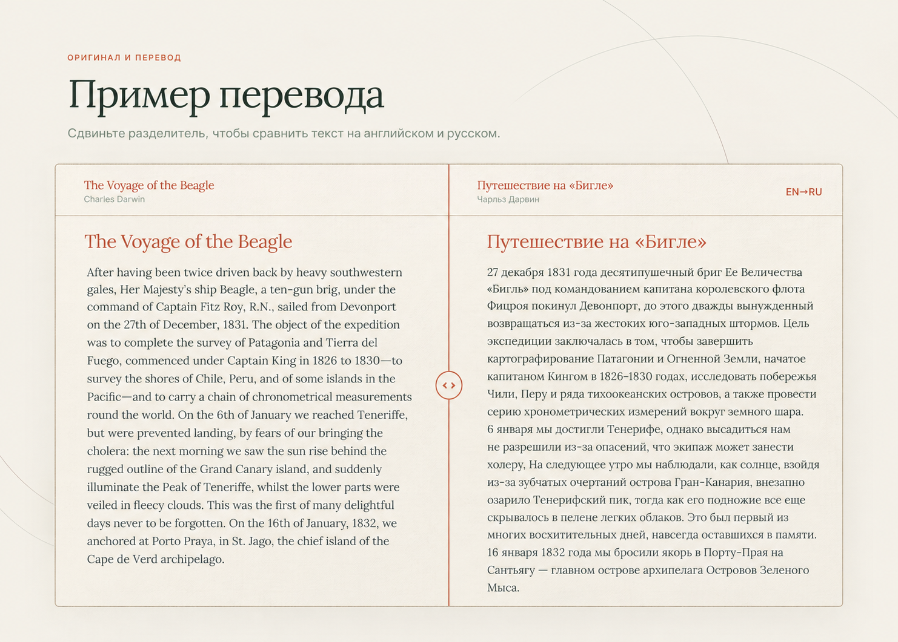
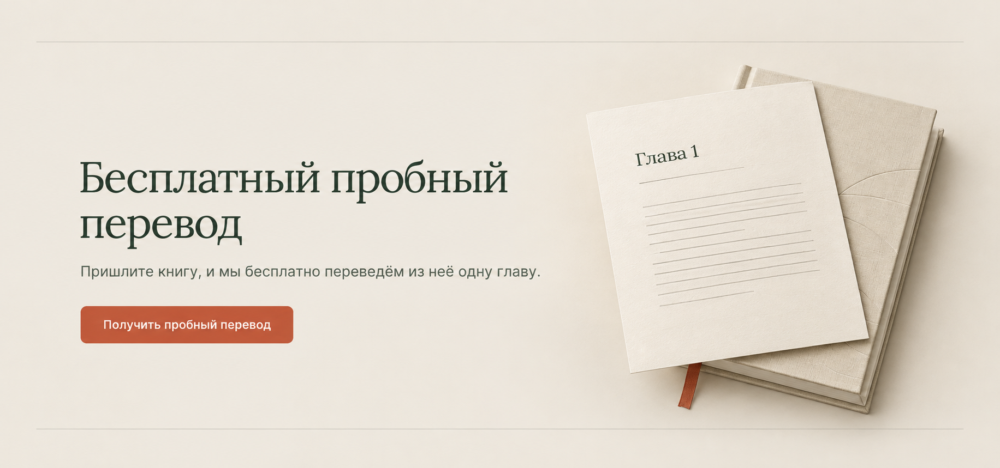
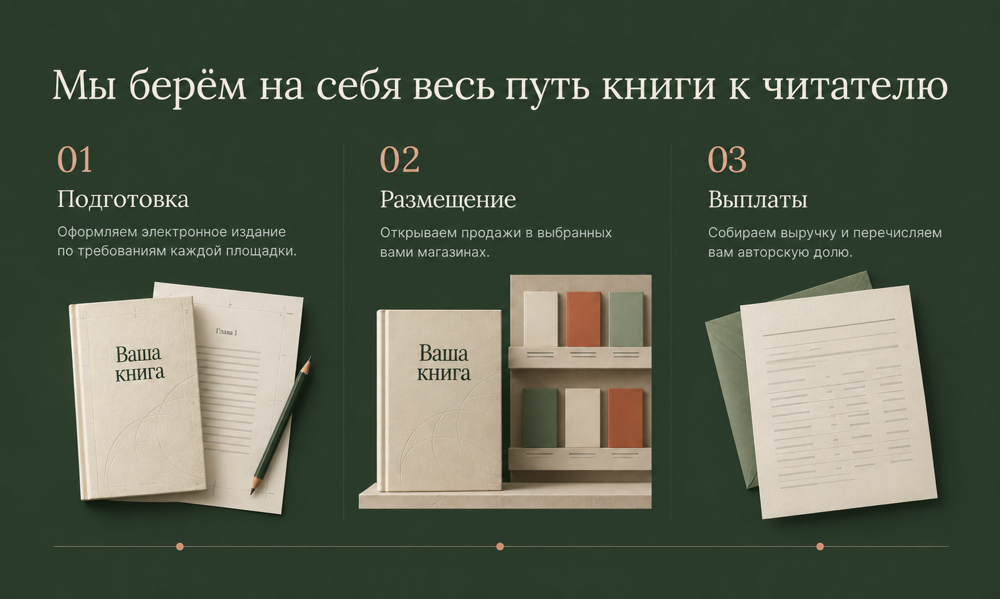

01 · Перевод

Промпт ImageGen
Use case: ui-mockup. Create ONE polished desktop website SECTION concept for the existing Globoox landing for authors, naturally continuing its selected hero. This is one section design, not multiple alternatives and not an entire website. Flat, full-bleed website screenshot; no browser chrome, app-device frame, montage, option labels, header, hero, team, publisher claims or navigation. Target1536px wide; use the stated section-height naturally, without stretching typography or content. Reference image1 is the SELECTED LIVE HERO: use its premium contemporary editorial art direction, Lora-like Cyrillic serif, Inter-like body, warm parchment #F4F0E8, dark forest #2C3B2D, terracotta #C05A3A, restrained sage/mist, hairline rules, generous calm spacing, subtle linen/paper materials. Ignore its small comparison label and do not repeat its hero. Subsequent reference images show CURRENT SECTION CONTENT and any retained interaction/illustration principle; redesign the layout coherently rather than copying their old appearance. Preserve the exact supplied Russian wording. No testimonials, statistics, promises, new features, forms, prices, badges, or invented paragraphs. No generic card grids, heavy shadows, gradients, glassmorphism or tech-network decoration. Prefer clear typographic hierarchy and fine dividers; realistic implementable web design with readable text. Do not add the removed footer mission, “КНИГИ БЕЗ ГРАНИЦ”, “Открыть приложение”, a standalone G monogram, contact email text, or a team block. Team is explicitly out of scope. The concepts are visual proposals only, no production changes. TARGET SECTION: Перевод. Target image1536×820, natural full-width section. ART DIRECTION: Warm parchment editorial opening. Left about42%: large asymmetric serif headline, with “наш перевод” in restrained terracotta italic; one very thin vertical rule separates the right side. Right about50%: the exact body as comfortable22–24px paragraphs split only at existing sentences; no card. Under the right text, one low-relief physical paper detail: two subtly offset cream manuscript leaves, English/Russian typographic lines suggested at a very small decorative scale, with delicate proofreader marks and a short terracotta thread connecting them. It must feel like careful literary craft, not a robot or AI dashboard. The decorative paper is secondary to readable content; no invented visible body text or repeated headline. Asymmetric but balanced, related to hero04’s editorial grid. Keep enough bottom breathing room to meet the next green section. EXACT CONTENT: Ключ к зарубежным читателям: наш перевод В его основе наша собственная технология на базе искусственного интеллекта, созданная совместно с лингвистами для художественной и научно-популярной литературы. Авторский стиль, интонация и терминология бережно сохраняются, а по качеству перевод сопоставим с работой профессионального переводчика.
02 · Языки

Промпт ImageGen
Use case: ui-mockup. Create ONE polished desktop website SECTION concept for the existing Globoox landing for authors, naturally continuing its selected hero. This is one section design, not multiple alternatives and not an entire website. Flat, full-bleed website screenshot; no browser chrome, app-device frame, montage, option labels, header, hero, team, publisher claims or navigation. Target1536px wide; use the stated section-height naturally, without stretching typography or content. Reference image1 is the SELECTED LIVE HERO: use its premium contemporary editorial art direction, Lora-like Cyrillic serif, Inter-like body, warm parchment #F4F0E8, dark forest #2C3B2D, terracotta #C05A3A, restrained sage/mist, hairline rules, generous calm spacing, subtle linen/paper materials. Ignore its small comparison label and do not repeat its hero. Subsequent reference images show CURRENT SECTION CONTENT and any retained interaction/illustration principle; redesign the layout coherently rather than copying their old appearance. Preserve the exact supplied Russian wording. No testimonials, statistics, promises, new features, forms, prices, badges, or invented paragraphs. No generic card grids, heavy shadows, gradients, glassmorphism or tech-network decoration. Prefer clear typographic hierarchy and fine dividers; realistic implementable web design with readable text. Do not add the removed footer mission, “КНИГИ БЕЗ ГРАНИЦ”, “Открыть приложение”, a standalone G monogram, contact email text, or a team block. Team is explicitly out of scope. The concepts are visual proposals only, no production changes. TARGET SECTION: Языки. Target image1536×1000, natural full-width section. ART DIRECTION: Deep forest-green language chapter. Left one-third holds the large cream heading. Right two-thirds contains a beautiful restrained OPEN BOOK in cream linen/paper, with four softly curving orbit paths like the current language block; this is the established language illustration principle (not the hero distribution diagram). The FOUR available language labels are large, legible terracotta-on-cream or cream-on-terracotta tabs near the book, never covering it. Beneath an inset hairline across the full section, present the NINE upcoming languages as a deliberate airy typographic catalogue in three equal columns × three rows, clearly grouped under “Скоро”. No tiny scattered upcoming tags. Keep all13 names exactly once in their correct status group. Do not repeat the four available languages in a subtitle. No flags, globe icon, CTA, stats or additional copy. Preserve accents and non-Latin scripts. This concept prioritizes readability of ALL language statuses and the original book/orbit relationship. EXACT CONTENT: Heading: «Языки перевода». Available group label: «Уже доступны». Four available: English; Français; Español; Русский. Upcoming group label: «Скоро». Nine upcoming, exact order in row-major reading: Deutsch; Italiano; Português; Türkçe; 中文; 日本語; 한국어; العربية; فارسی.
03 · Пример перевода

Промпт ImageGen
Use case: ui-mockup. Create ONE polished desktop website SECTION concept for the existing Globoox landing for authors, naturally continuing its selected hero. This is one section design, not multiple alternatives and not an entire website. Flat, full-bleed website screenshot; no browser chrome, app-device frame, montage, option labels, header, hero, team, publisher claims or navigation. Target1536px wide; use the stated section-height naturally, without stretching typography or content. Reference image1 is the SELECTED LIVE HERO: use its premium contemporary editorial art direction, Lora-like Cyrillic serif, Inter-like body, warm parchment #F4F0E8, dark forest #2C3B2D, terracotta #C05A3A, restrained sage/mist, hairline rules, generous calm spacing, subtle linen/paper materials. Ignore its small comparison label and do not repeat its hero. Subsequent reference images show CURRENT SECTION CONTENT and any retained interaction/illustration principle; redesign the layout coherently rather than copying their old appearance. Preserve the exact supplied Russian wording. No testimonials, statistics, promises, new features, forms, prices, badges, or invented paragraphs. No generic card grids, heavy shadows, gradients, glassmorphism or tech-network decoration. Prefer clear typographic hierarchy and fine dividers; realistic implementable web design with readable text. Do not add the removed footer mission, “КНИГИ БЕЗ ГРАНИЦ”, “Открыть приложение”, a standalone G monogram, contact email text, or a team block. Team is explicitly out of scope. The concepts are visual proposals only, no production changes. TARGET SECTION: Пример перевода. Target image1536×1100, natural full-width section. ART DIRECTION: Warm parchment reading-proof section. Headline, small eyebrow and instruction align left above a broad, exquisite paper reading frame with a single thin outer rule and virtually no shadow. Replace the current laptop shell with a sophisticated direct reading surface; retain the central vertical wipe divider with one small circular terracotta drag handle, indicating the existing original/translation comparison interaction. Put language/title metadata at the upper corners of the reading frame. The compared reading surface should show enough of the actual English and Russian sample to judge its typography, not a decorative blurred texture. Left English and right Russian may be presented as two clear adjacent excerpt columns at the half-way wipe position, with the center divider uninterrupted, no overlap of sentences. Long body can be excerpted after the supplied first2 sentences, without inventing text. No new controls, invented ratings, translator faces or changed book/author. Excellent readable book typography. Exact top label: “ОРИГИНАЛ И ПЕРЕВОД”. Title: “Пример перевода”. Instruction: “Сдвиньте разделитель, чтобы сравнить текст на английском и русском.” EXACT CONTENT: ОРИГИНАЛ И ПЕРЕВОД Пример перевода Сдвиньте разделитель, чтобы сравнить текст на английском и русском. Путешествие на «Бигле» Чарльз Дарвин EN→RU Путешествие на «Бигле» 27 декабря 1831 года десятипушечный бриг Ее Величества «Бигль» под командованием капитана королевского флота Фицроя покинул Девонпорт, до этого дважды вынужденный возвращаться из-за жестоких юго-западных штормов. Цель экспедиции заключалась в том, чтобы завершить картографирование Патагонии и Огненной Земли, начатое капитаном Кингом в 1826–1830 годах, исследовать побережья Чили, Перу и ряда тихоокеанских островов, а также провести серию хронометрических измерений вокруг земного шара. 6 января мы достигли Тенерифе, однако высадиться нам не разрешили из-за опасений, что экипаж может занести холеру. На следующее утро мы наблюдали, как солнце, взойдя из-за зубчатых очертаний острова Гран-Канария, внезапно озарило Тенерифский пик, тогда как его подножие все еще скрывалось в пелене легких облаков. Это был первый из многих восхитительных дней, навсегда оставшихся в памяти. 16 января 1832 года мы бросили якорь в Порту-Прая на Сантьягу — главном острове архипелага Островов Зеленого Мыса. The Voyage of the Beagle Charles Darwin EN→RU The Voyage of the Beagle After having been twice driven back by heavy southwestern gales, Her Majesty’s ship Beagle, a ten-gun brig, under the command of Captain Fitz Roy, R.N., sailed from Devonport on the 27th of December, 1831. The object of the expedition was to complete the survey of Patagonia and Tierra del Fuego, commenced under Captain King in 1826 to 1830—to survey the shores of Chile, Peru, and of some islands in the Pacific—and to carry a chain of chronometrical measurements round the world. On the 6th of January we reached Teneriffe, but were prevented landing, by fears of our bringing the cholera: the next morning we saw the sun rise behind the rugged outline of the Grand Canary island, and suddenly illuminate the Peak of Teneriffe, whilst the lower parts were veiled in fleecy clouds. This was the first of many delightful days never to be forgotten. On the 16th of January, 1832, we anchored at Porto Praya, in St. Jago, the chief island of the Cape de Verd archipelago.
04 · Пробная глава

Промпт ImageGen
Use case: ui-mockup. Create ONE polished desktop website SECTION concept for the existing Globoox landing for authors, naturally continuing its selected hero. This is one section design, not multiple alternatives and not an entire website. Flat, full-bleed website screenshot; no browser chrome, app-device frame, montage, option labels, header, hero, team, publisher claims or navigation. Target1536px wide; use the stated section-height naturally, without stretching typography or content. Reference image1 is the SELECTED LIVE HERO: use its premium contemporary editorial art direction, Lora-like Cyrillic serif, Inter-like body, warm parchment #F4F0E8, dark forest #2C3B2D, terracotta #C05A3A, restrained sage/mist, hairline rules, generous calm spacing, subtle linen/paper materials. Ignore its small comparison label and do not repeat its hero. Subsequent reference images show CURRENT SECTION CONTENT and any retained interaction/illustration principle; redesign the layout coherently rather than copying their old appearance. Preserve the exact supplied Russian wording. No testimonials, statistics, promises, new features, forms, prices, badges, or invented paragraphs. No generic card grids, heavy shadows, gradients, glassmorphism or tech-network decoration. Prefer clear typographic hierarchy and fine dividers; realistic implementable web design with readable text. Do not add the removed footer mission, “КНИГИ БЕЗ ГРАНИЦ”, “Открыть приложение”, a standalone G monogram, contact email text, or a team block. Team is explicitly out of scope. The concepts are visual proposals only, no production changes. TARGET SECTION: Пробная глава. Target image1536×720, natural full-width section. ART DIRECTION: Warm slightly darker parchment invitation, spacious horizontal composition. Large serif title in the left60%, exact one-sentence explanation below, followed by one terracotta rounded-rectangle button matching the selectedhero. Right30% shows a single tangible cream chapter proof sheet resting partly over a slim closed cream book, a discreet terracotta bookmark peeking out. The sheet may show only “Глава1” and faint unlettered typesetting rules; no invented prose, claims or badges. Subtle high-quality paper relief and natural soft shadow, not a floating SaaS card or upload-form. No price label, gift icon, checkmarks or “без обязательств” copy. Narrow fine rules at top/bottom tie this invitation to the editorial system. All exact user content stays easily readable and the CTA is the visual action. EXACT CONTENT: Бесплатный пробный перевод Пришлите книгу, и мы бесплатно переведём из неё одну главу. Получить пробный перевод
05 · Путь книги к читателю

Промпт ImageGen
Use case: ui-mockup. Create ONE polished desktop website SECTION concept for the existing Globoox landing for authors, naturally continuing its selected hero. This is one section design, not multiple alternatives and not an entire website. Flat, full-bleed website screenshot; no browser chrome, app-device frame, montage, option labels, header, hero, team, publisher claims or navigation. Target1536px wide; use the stated section-height naturally, without stretching typography or content. Reference image1 is the SELECTED LIVE HERO: use its premium contemporary editorial art direction, Lora-like Cyrillic serif, Inter-like body, warm parchment #F4F0E8, dark forest #2C3B2D, terracotta #C05A3A, restrained sage/mist, hairline rules, generous calm spacing, subtle linen/paper materials. Ignore its small comparison label and do not repeat its hero. Subsequent reference images show CURRENT SECTION CONTENT and any retained interaction/illustration principle; redesign the layout coherently rather than copying their old appearance. Preserve the exact supplied Russian wording. No testimonials, statistics, promises, new features, forms, prices, badges, or invented paragraphs. No generic card grids, heavy shadows, gradients, glassmorphism or tech-network decoration. Prefer clear typographic hierarchy and fine dividers; realistic implementable web design with readable text. Do not add the removed footer mission, “КНИГИ БЕЗ ГРАНИЦ”, “Открыть приложение”, a standalone G monogram, contact email text, or a team block. Team is explicitly out of scope. The concepts are visual proposals only, no production changes. TARGET SECTION: Путь книги к читателю. Target image1536×920, natural full-width section. ART DIRECTION: Deep forest-green publication process section, MUST remain green. Cream serif heading across top, no cramped line breaks. Below, one generous three-column editorial sequence separated by fine muted vertical lines, rather than individual cards. Large peach/terracotta numbers01,02,03; exact step titles and descriptions below, comfortable cream/mist text. At the lower part of each column show a small refined cream paper vignette, all same art direction:01 a carefully typeset ebook proof sheet with crop marks;02 the SAME book beside a spare abstract storefront shelf, no invented logos;03 a neat paper remittance statement with simple rules, no currency numbers, percentages or fabricated financial data. A single restrained fine line with tiny circular dots runs left-to-right below the three vignettes to express continuity. No arrow streaks, gradients, dashboards or additional feature copy. This is the service journey, not a carousel. Keep every text item verbatim and the green background edge-to-edge. EXACT CONTENT: Мы берём на себя весь путь книги к читателю 01 Подготовка Оформляем электронное издание по требованиям каждой площадки. 02 Размещение Открываем продажи в выбранных вами магазинах. 03 Выплаты Собираем выручку и перечисляем вам авторскую долю.